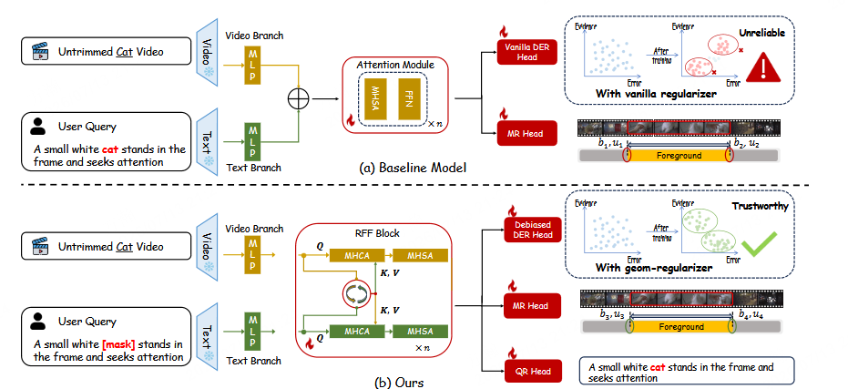
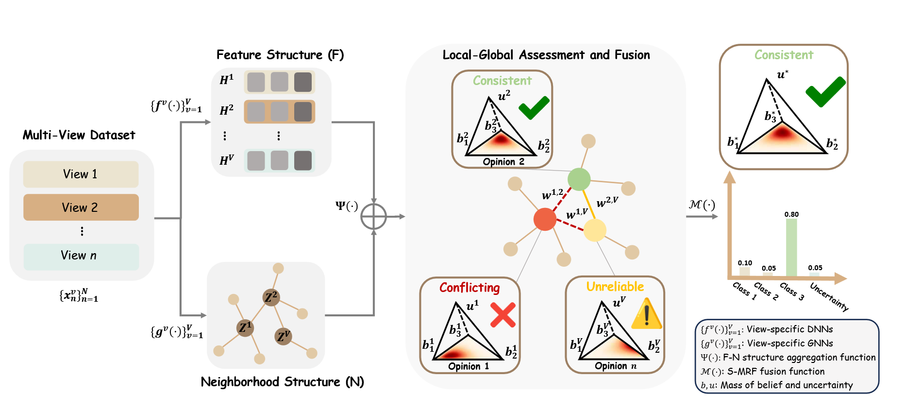
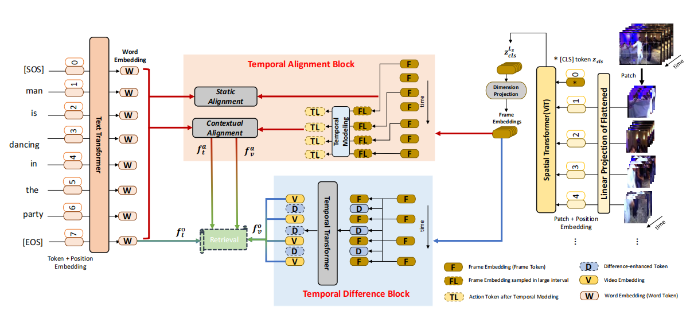

AAAI 2026

I am a Research Scientist at the Xingchen AGI Lab, China Telecom Artificial Intelligence Technology Co., Ltd. in Beijing. My work focuses on video-text retrieval, video understanding, text-to-image generation, and multimodal large language models.
I welcome research collaborations and am currently recruiting research interns. If you are interested, please feel free to contact me at fanghan1996@outlook.com.



ACM MM 2026 Mixture-of-Thought-Tokens: Unifying Perception and Reasoning for Free-form Multimodal Grounding, Tianyi Gao, Han Fang, Tianyi Ding, Hao Li, Xin Wei, Hongbo Sun, xiaodong dong, Ye Yuan, Jinglin Xu, Kongming Liang, Hao Sun* and Jingmin Xin*.ACM MM 2026 GeoAnchor: Collaborative Reasoning via Latent Decomposition for 3D Spatial Understanding, Hao Li, Han Fang, Zixin Pan, Xin Wei, Hongbo Sun, Jinglin Xu, Zhiyu Lin, Ye Yuan, Zhongjiang He, Yu Yu* and Hao Sun*.arXiv preprint 2026 SSVP: Synergistic Semantic-Visual Prompting for Industrial Zero-Shot Anomaly Detection, Chenhao Fu, Han Fang, Xiuzheng Zheng, Wenbo Wei, Yonghua Li* and Hao Sun*.arXiv preprint 2026 Structure-Aware Prototype Guided Trusted Multi-View Classification, Haojian Huang, Jiahao Shi, Zhe Liu, Harold Haodong Chen, Han Fang, Hao Sun* and Zhongjiang He*.AAAI 2026 Adaptive Evidential Learning for Temporal-Semantic Robustness in Moment Retrieval, Haojian Huang, Kaijing Ma, Jin Chen, Haodong Chen, Zhou Wu, Xianghao Zang, Han Fang, Chao Ban, Hao Sun*, Mulin Chen* and Zhongjiang He.ICDAR 2025 SelectVision: Adaptive Vision Resolution Selection for Visual Document Understanding, Zhongjiang He, An Zhao, Ye Yuan, Han Fang, Hao Sun, Kongming Liang and Zhanyu Ma*.TAFFC 2025 DDL: Dynamic Direction Learning for Semi-Supervised Facial Expression Recognition, Yaqi Li, Jing Jiang, Yuhang Zhang, Han Fang, Jiani Hu and Weihong Deng*.AAAI 2025 Trusted Unified Feature-Neighborhood Dynamics for Multi-View Classification, Haojian Huang, Chuanyu Qin, Zhe Liu, Kaijing Ma, Jin Chen, Han Fang, Chao Ban, Hao Sun* and Zhongjiang He*.arXiv preprint 2025 Bovila: Bootstrapping Video-Language Alignment via LLM-Based Self-Questioning and Answering, Jin Chen, Kaijing Ma, Haojian Huang, Jiayu Shen, Han Fang, Xianghao Zang, Chao Ban, Zhongjiang He, Hao Sun* and Yanmei Kang*.ICASSP 2025 FASTER: Face Attribute Sliders with Semantic Rewards, Jingyan Chen, Lanxiang Zhou, Han Fang, Zerun Feng, Chao Ban, Yaqi Li, Hao Sun* and Jiani Hu*.ICASSP 2025 ViCo: A Multitask Video-Enhanced and Cognition-Preserving Modality Alignment Training Framework, Zhenda Yu, Jin Chen, Jiayu Shen, Lanxiang Zhou, Han Fang, Xianghao Zang, Chao Ban, Jingfen Chen, Zhongjiang He, Hao Sun, Zerui Li* and Yanmei Kang*.ACM MM 2024 GOAL: Grounded Text-to-Image Synthesis with Joint Layout Alignment Tuning, Yaqi Li, Han Fang, Zerun Feng, Kaijing Ma, Chao Ban, Xianghao Zang, Lanxiang Zhou, Zhongjiang He, Jingyan Chen, Jiani Hu*， Hao Sun* and Huayu Zhang.ICME 2024 ProTA: Probabilistic Token Aggregation for Text-Video Retrieval (Oral), Han Fang, Xianghao Zang, Chao Ban, Zerun Feng, Lanxiang Zhou, Zhongjiang He, Yongxiang Li and Hao Sun*.ICME 2024 Disentangle and Denoise: Tackling Context Misalignment for Video Moment Retrieval (Oral), Kaijing Ma, Han Fang, Xianghao Zang, Chao Ban, Lanxiang Zhou, Zhongjiang He, Yongxiang Li, Hao Sun, Zerun Feng and Xingsong Hou*.ACM MM 2023 A Baseline Investigation: Transformer-Based Cross-View Baseline for Text-Based Person Search, Xianghao Zang, Wei Gao*, Ge Li, Han Fang, Chao Ban, Zhongjiang He and Hao Sun*.ACM MM 2023 Mask to Reconstruct: Cooperative Semantics Completion for Video-Text Retrieval, Han Fang, Zhifei Yang, Xianghao Zang, Chao Ban， Zhongjiang He, Hao Sun* and Lanxiang Zhou.TMM 2022 Transferring Image-CLIP to Video-Text Retrieval via Temporal Relations, Han Fang, Pengfei Xiong*, Luhui Xu and Wenhan Luo.TMM 2021 Dynamic Training Data Dropout for Robust Deep Face Recognition, Yaoyao Zhong, Weihong Deng*, Han Fang, Jiani Hu, Dongyue Zhao, Xian Li and Dongchao Wen.ICASSP 2021 FASTER: Face Attribute Sliders with Semantic Rewards, Hongyu Chen, Ruifang Liu*, Han Fang and Ximing Zhang.ECCV 2020 Generate to Adapt: Resolution Adaptation Network for Surveillance Face Recognition, Han Fang, Weihong Deng*, Yaoyao Zhong and Jiani Hu.